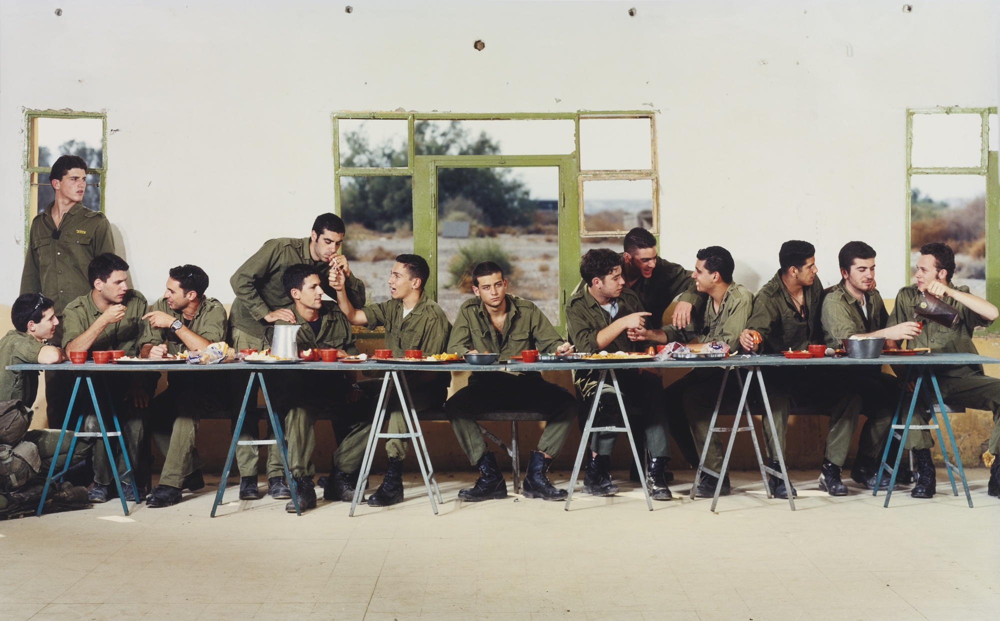
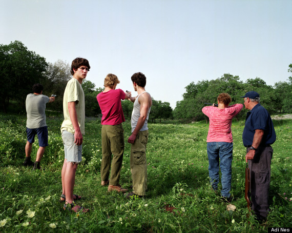
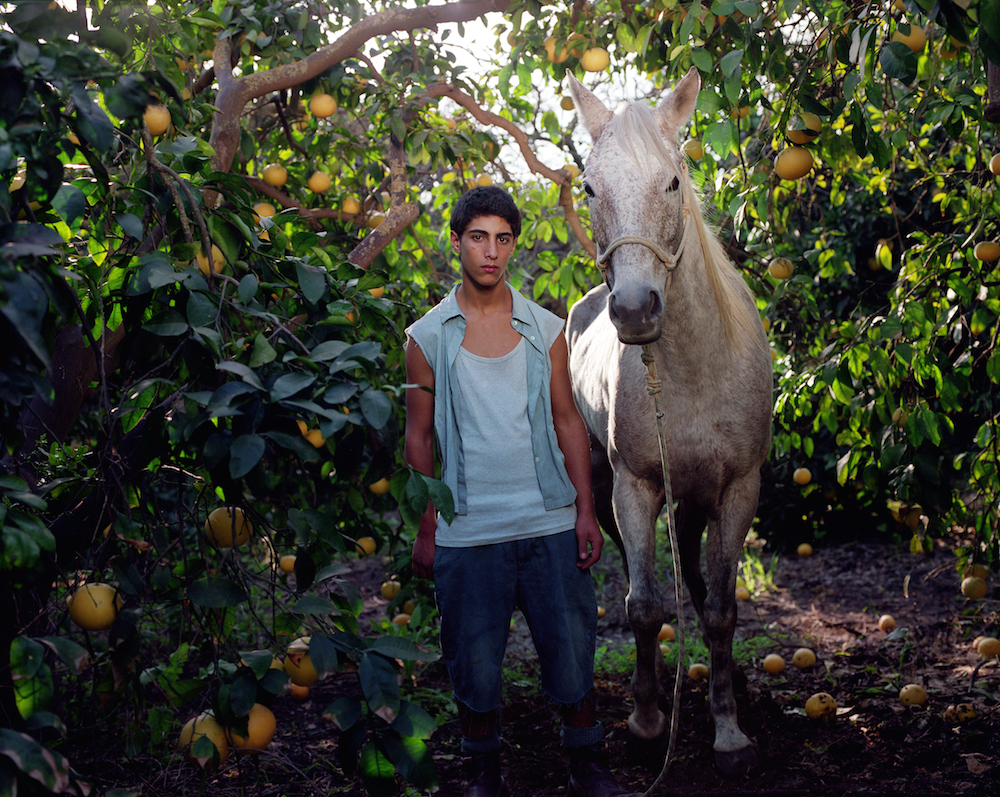

Adi Nes
Testaments
December 14 - March 1, 2020
Adi Nes stands out as one of the most important and leading photographers in Israel.
Throughout 20 years of activity, his artwork has developed to be groundbreaking for an entire generation of artists
while clearly presenting the multi-layered complexities of Israeli identity. Nes creates meticulously crafted, staged images that are both
autobiographical and attest to living in a country in conflict. Central themes in Adi Nes’ photographs deal with the issues
of Israeli identity and masculinity. Nes’ multi-layered photographs draw inspiration from his personal biography, and also from
the collective Israeli memory and universal art history. Sexual tension is ever-present in Nes’ work, as he delves into complex explorations of homoeroticism.

